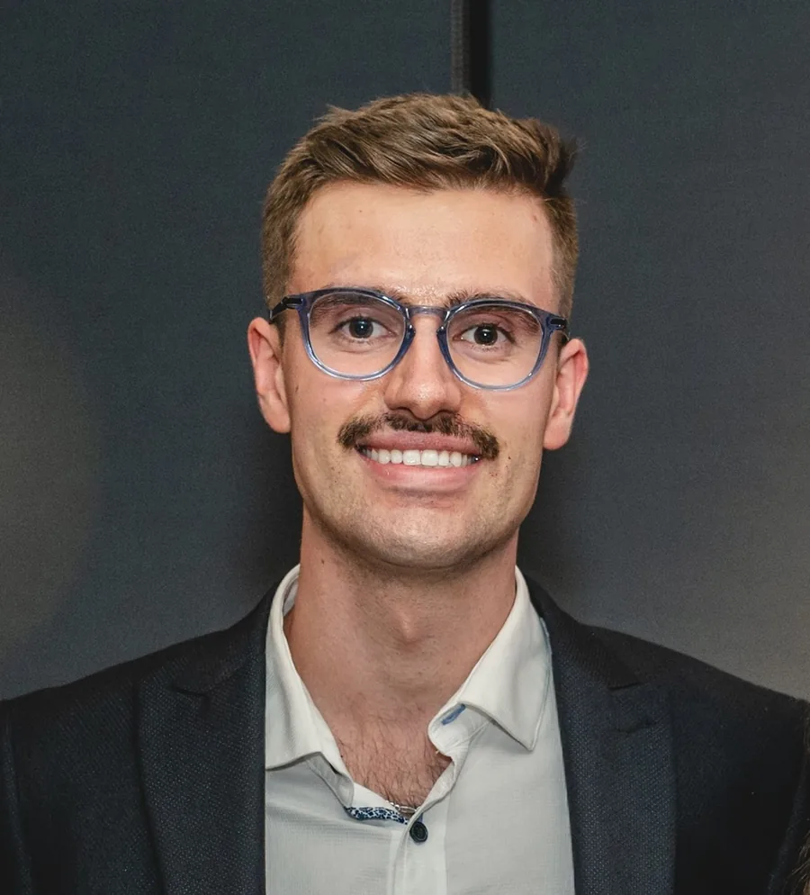
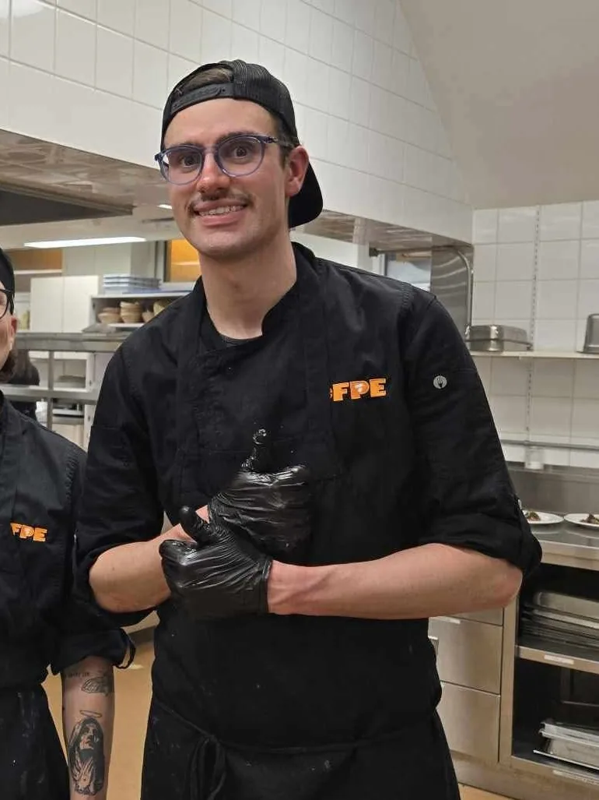
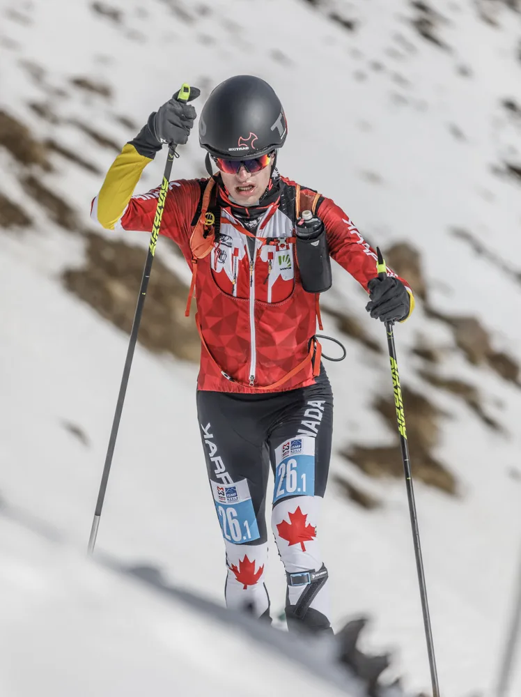
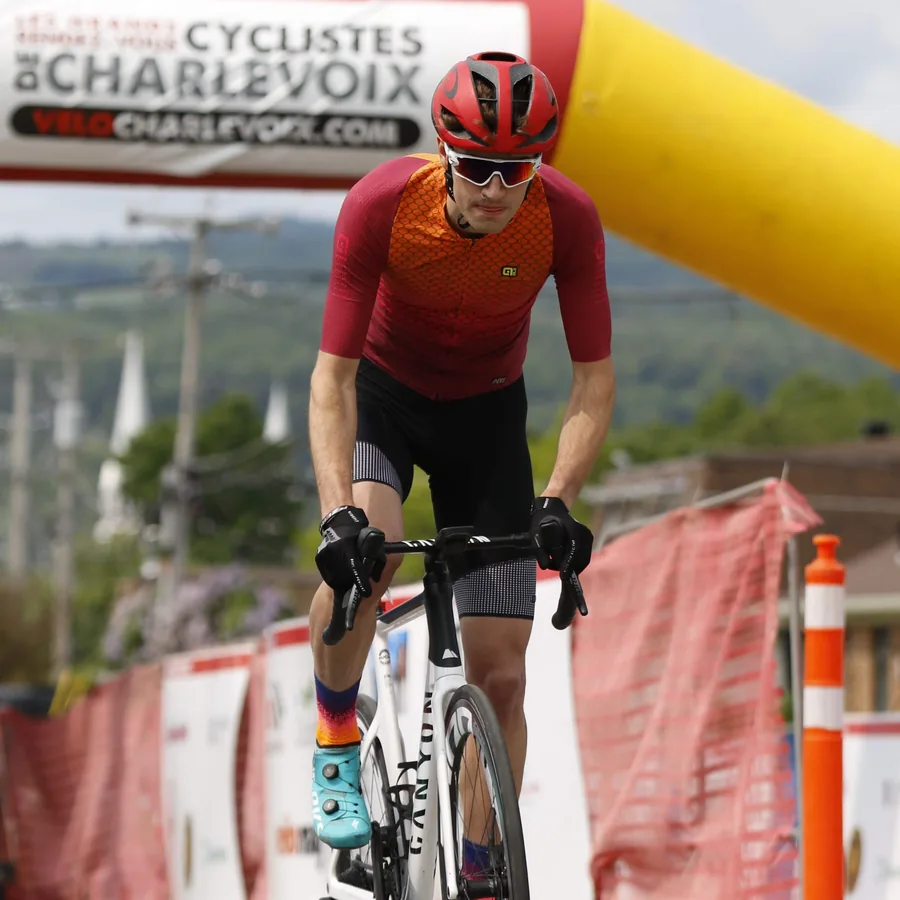

La profondeur
Comprendre les mécanismes avant d'agir : ce qu'un aliment, un exercice ou un soin fait réellement dans le corps. Ce qui est démontré, pas ce qui se vend.
À propos
Un cuisinier, un athlète, un thérapeute — il arrive que les trois tiennent dans la même personne. La Synthase est née de cette rencontre.




Votre hôte
Je suis cuisinier de formation, massothérapeute formé et ancien athlète de haut niveau en ski-alpinisme. Les trois piliers de La Synthase, je ne les ai pas assemblés sur papier : je les ai vécus, l'un après l'autre, dans mon propre corps et ma propre cuisine.
Ce qui me distingue, c'est ma façon de comprendre les choses. Je ne me contente jamais d'une recette ni d'un programme tout fait : je descends jusqu'aux mécanismes — la physiologie, la biochimie, ce qu'un aliment fait réellement dans le corps — pour séparer ce qui est démontré de ce qui n'est que du marketing. Cette rigueur, nourrie aussi par mes études en finance à l'Université Laval, je la mets au service de chaque décision prise pour vous.
La Synthase est née d'un constat simple : les gens qui exigent le meilleur pour leur maison, leur table et leur temps se retrouvent pourtant à coordonner eux-mêmes leur santé — les repas de la semaine à planifier d'un côté, un entraîneur de l'autre, un thérapeute quand il reste une heure. Trois calendriers, aucune cohérence.
Je réunis ces trois métiers en une seule personne, pour qu'ils s'écrivent enfin ensemble : un seul bilan, un seul interlocuteur, quelques foyers à la fois. Et j'arrive chez vous d'abord pour écouter — chaque foyer m'apprend quelque chose.
Antoine Corbeil
Mes convictions
Comprendre les mécanismes avant d'agir : ce qu'un aliment, un exercice ou un soin fait réellement dans le corps. Ce qui est démontré, pas ce qui se vend.
Chaque accompagnement commence par une conversation, pas par une formule. J'arrive chez vous pour comprendre — vos objectifs, vos goûts, votre rythme.
J'entre chez vous. Cela exige plus que du talent : une réserve absolue, quelques foyers à la fois, des allées et venues qui ne pèsent rien.
Faisons connaissance
Un entretien privé, confidentiel et sans engagement, chez vous ou à l'endroit de votre choix.